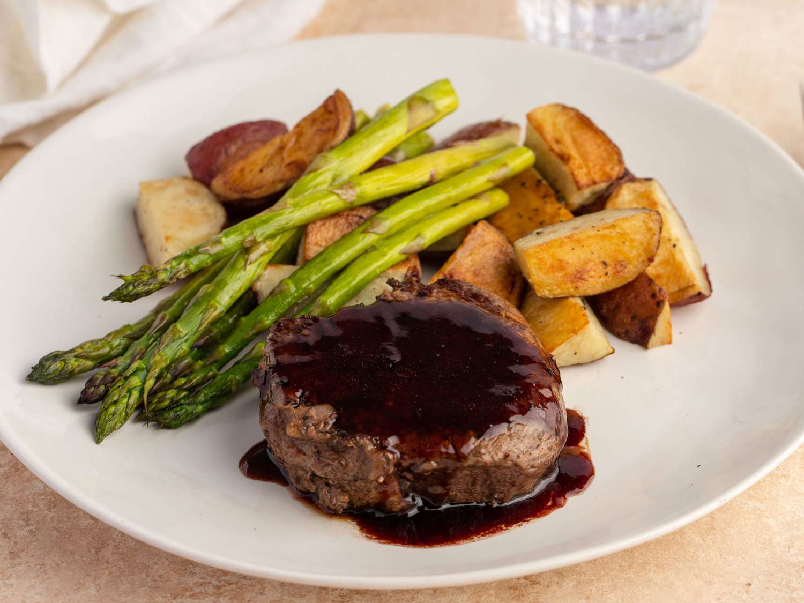

Filet Mignon with Rich Balsamic Glaze

Description
This is the best filet mignon recipe for an elegant dinner for two.
Red wine and balsamic vinegar make a wonderfully rich sauce to serve with the steak.
Delicious with steamed asparagus and baby red potatoes.
Ingredients
- Filet Mignon Steaks
- Salt and Pepper
- Balsamic Vinegar
- Red Wine
Steps
- Gather all Ingredients
- Sprinkle both sides of steaks with pepper and salt.
- Heat a nonstick skillet over medium-high heat. Sear steaks in the hot pan until browned, about 1 minute per side.
- Reduce heat to medium-low, and pour in balsamic vinegar and red wine.
Cover and cook for 4 minutes. Flip steaks and baste with sauce; cover and cook for 4 minutes longer.
- Remove steaks to two warmed plates. Spoon a tablespoon of glaze over each steak and serve immediately.